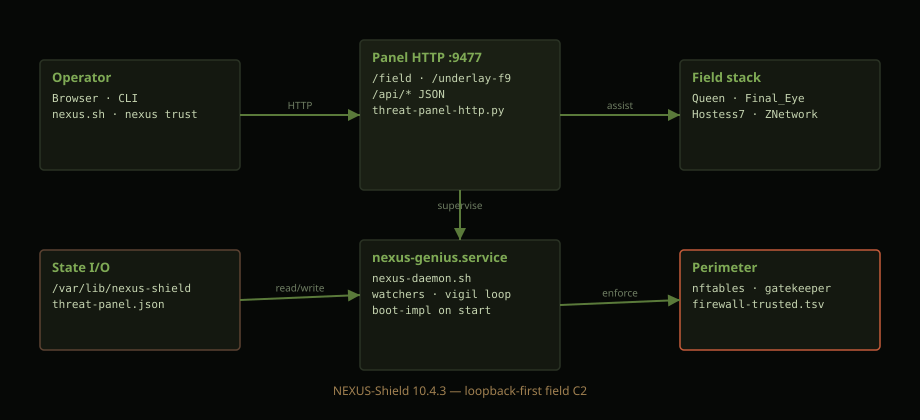

http://127.0.0.1:9477/field
git clone https://github.com/ZacharyGeurts/AmmoOS.git
cd AmmoOS
sudo ./install-all.sh
# dev tree:
export SG_ROOT=/path/to/SG && ./nexus.sh16 public repos — page-first pins, release SHA manifest.
Panel HTTP serves all browser surfaces on loopback :9477. Queen world on :9481.

| Route | Role |
|---|---|
/field | Host desktop |
/command | Threat panel + training |
/underlay-f9 | Tristate installer |
/api/chips/combinatronic | Chip combinatronic status |
/api/g16/universal-combinatronic | Universal combinatronic panel |
/api/program/combinatronic | Program combinatronic boil |
Module: lib/threat-panel-http.py